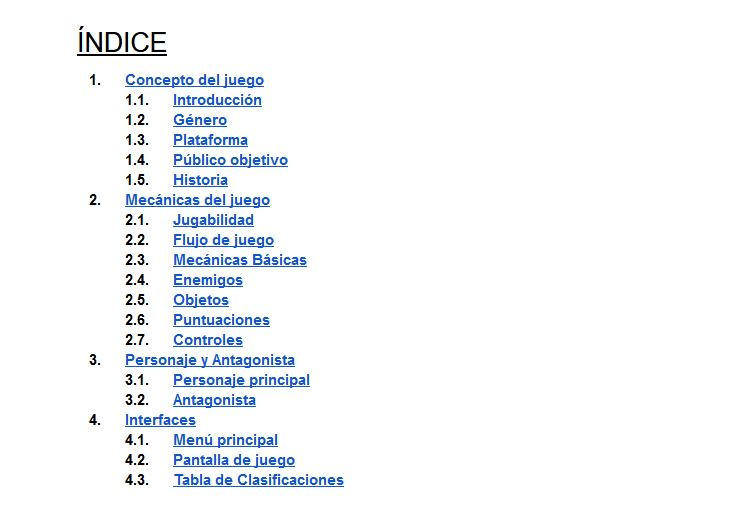
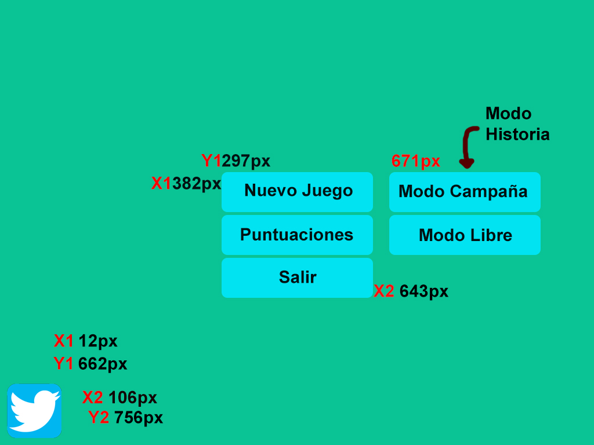

Muy buenas gente!
Vamos a repasar algo de vital importancia para la creación de un videojuego el cual hasta hace poco yo ignoraba. No por desprecio sino por desconocimiento de su existencia.
Sepan que yo no estoy instruido en ninguna escuela del Game Design, soy un estudiante autodidacta en pleno despegue, por lo cual no cuento con herramientas ni conocimientos técnicos con los que respaldar mis juegos o textos. Puede que no todo lo que diga vaya a estar bien, sino que es lo que sé o creo en el momento. Disculpen si erro en algo, aún estoy aprendiendo jaja.
¿Que es un GDD?
El “Documento de Diseño de Juego” o “Game Design Document” (GDD) es un documento de texto en el cual se plasman todas las ideas que conforman al juego, tales como su historia si la tiene, el o los protagonistas, que mecanicas utilizará, como será su menú, etc. Para ser más exactos, es el esqueleto de nuestro juego.
Me acuerdo que al principio, cuando empecé a armar Bad Harvest, iba inventando y viendo en el momento donde me quedaba más cómodo los elementos del HUD, como me gustaría el menú, modificando una mecánica que no me terminó de convencer y podria seguir asi un buen rato pero no es la idea.
A lo que apunto es que realmente es necesario el tener organizado nuestro videojuego mucho antes de comenzar a desarrollarlo. Ya que si vamos inventando en el camino es muy probable que en unos días termines re haciendo líneas de código debido a que algo no te termino por convencer.
Me gustaría que revisarán estos dos documentos que les comparto, en los cuales van a ver muy claramente cómo hay que realizar un GDD.
Ambos documentos me fueron de gran ayuda para orientarme con el mio, es por eso que si les interesa le den una ojeada. Super recomendado.
Referencias de mi documento
Para armar mi documento de diseño me bastaron los ítems que ven en esta imagen.
Concepto del Juego
Introducción: En este caso redacte en pocos renglones de que trata el juego, como si tuviera que describirlo a una persona en lo que dure el viaje en un ascensor.
Género: ¿Va a ser Arcade, Aventura o Acción? . No más que eso.
Plataforma: ¿Vamos a desarrollar para escritorio o consolas? ¿Que sistema operativo? ¿Cúal consola?
Público Objetivo: Este lo considero un tanto importante, ya que dependiendo nuestro público va a variar nuestro contenido. Colores más llamativos, obscuros, interfaces, etc. Todo varia segun a quien le apuntemos.
Historia: simplemente el trasfondo de nuestro juego.
Mecánicas del Juego
Jugabilidad: según nuestra querida Wikipedia jugabilidad "...es la calidad del juego en términos de sus reglas de funcionamiento y de su diseño como juego. Se refiere a todas las experiencias de un jugador durante la interacción con sistemas de juegos."
En mi caso coloque como el jugador podrá interaccionar con el menú, la progresión dentro del juego, la interacción con los objetos y el cómo influye la puntuación.
Flujo de juego: en este aspecto trate de hacer un resumen breve de cómo es una partida en Bad Harvest. El problema de este es que, en mi caso, agregue varias mecánicas nuevas por lo que ahora debo re-escribirlo jaja y agradezco sea en el GDD. Me gustaría agregar que no es necesario resumir, siempre que podamos dar mayor detalle va a ser mejor para el que luego lo lea y comprenda bien en que está trabajando.
Mecánicas básicas: simplemente las acciones que el jugador puede hacer dentro del juego, como correr, saltar, o hacer una triple mortal en el aire mientras arroja fuego de sus manos. Es el momento de describir todas esas cosas.
Enemigos: ¿Un dragón? ¿Un simple slime?, describirlo tal cual quieres que sea, con todas sus características.
Objetos: ¿Qué objetos tendrá tu juego?, desde pociones hasta cosas totalmente fuera de lo común. Lo ideal sería que los describas en este lugar.
Puntuaciones: En mi caso, al ser un juego 100% destinado a competir por puntos, me veo obligado a detallar la cantidad de puntos que deja cada objeto, tanto agarrandolo de manera normal o formando un combo. Mientras más detallado este el sistema de puntuación y el cómo funciona, mejor.
Controles: agarren su ya desgastado Joystick y saquenle su mejor foto. Luego editen en Photoshop que hará cada botón y terminado! Así de simple :D
Personaje principal y Antagonista
En esta sección trate de meterme más a fondo en detalles de cada personaje, como su apariencia, gustos, colores principales, su historia y en cómo afecta esta en sus vidas.
Por ejemplo: a Juan le quitaban sus dulces de chico en el colegio y luego lo golpeaban sus compañeros, llegando al punto de lastimarle un ojo. Ahora Juan ya adulto desarrolló un odio intenso hacia los niños, les roba sus dulces y para colmo tiene un ojo rasgado.
Traten de hacer bocetos, dibujos de cada aspecto de ellos. Mucha experiencia no tengo, pero creo que para armar un buen personaje este tiene que tener una historia de trasfondo que lo respalde.
Interfaces
Por último y para ir terminando, las interfaces! Algo sumamente importante y que mínimo tiene que planificar antes de armarlo.
Aunque a algunos no nos guste y entre ellos me incluyo a mi. Debemos tomar Photoshop y comenzar a maquetar el cómo queremos que se vea nuestro juego.
Como esta imagen quedó en desuso ya que modifique el menú( y vuelvo a repetirlo, menos mal cambié de idea en el documento y no en el Game Maker), se las comparto a modo de referencia. En ella pueden ver como defino la posición de cada botón para luego volcarlo en el juego. Realmente referencias de este tipo ayudan demasiado. Se las recomiendo :)
Resumen
Como estuvieron leyendo, el GDD es básicamente todo elemento que compone nuestro juego. Tampoco hay un único modelo de documento, lo que le sirve a uno no tiene porque servir a otro, quizás en sus juegos no ocupen las puntuaciones pero si habilidades. Cada uno amoldara su documento a su juego.
Algo a tener en cuenta y que no lo dije antes es que cada cambio que vayan a hacer en el juego tiene que verse reflejado en el documento primero. Esto no es algo que se escribe una vez y esta terminado, va a pasar varias revisiones hasta llegar a la versión final.
Me gustaría dejarles una última observación y es que traten de hacer bocetos de todo, ya sea de los objetos, enemigos, personajes, escenarios, todo. Les va a ayudar a ustedes y en caso de tenerlo, a su equipo de trabajo a tener una mejor noción en lo que están trabajando. Les dejo este enlace referido a ¿Qué es Concept Art? que de seguro les va a interesar. (No hace falta saber dibujar).
Espero les haya sido de utilidad esta mini guía para documentar nuestro videojuego. Recuerden visitar los enlaces que les deje, ami me sirvieron para orientarme. Si creen que me equivoque o les gustaría agregar algo pueden hacerlo en los comentarios.
Nos vemos en la próxima! Muchas gracias por leer ~
Posteado por Alfacoy. 07 Marzo, 2019.